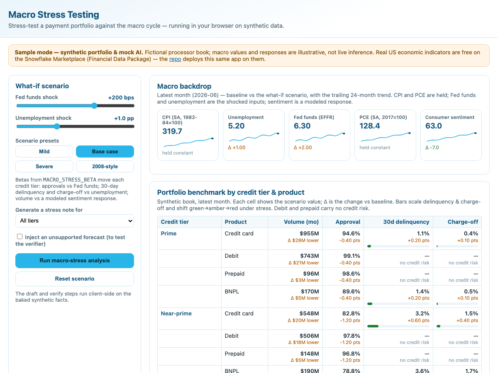
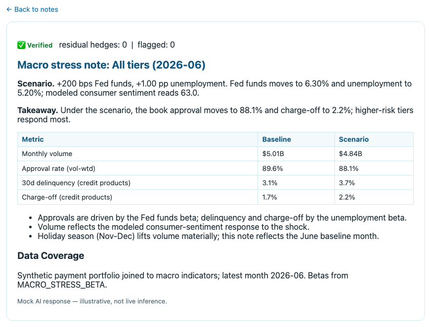

01 / See
A portfolio benchmark by credit tier and product — transaction volume, approval rate, 30-day delinquency, charge-off — sitting alongside the macro backdrop, with verified research notes badged Verified or Needs review.
SNOW PACK · FINANCIAL SERVICES
A payments processor's portfolio doesn't live in a vacuum — approvals tighten when Fed funds rise, charge-offs climb with unemployment, and volume spikes every holiday. An app that ties portfolio health to the real macro backdrop, runs what-if stress scenarios, and drafts a grounded, self-verifying stress note — with a Cortex Agent you can explore in Snowsight.
Synthetic portfolio in sample mode. Mock AI responses are illustrative, not live inference.
Risk and FP&A teams are asked the same question every planning cycle: what happens to our book if the macro environment turns? Answering it means joining your own authorization and settlement data to economic indicators, modeling how each credit tier responds, and — increasingly — doing it through an LLM that a risk committee will actually trust. This pack shows that end to end: a portfolio benchmarked against real indicators, elasticity-driven what-if scenarios, and an agent whose numbers are grounded in governed data with a verifier that refuses anything unsupported.
A portfolio benchmark by credit tier and product — transaction volume, approval rate, 30-day delinquency, charge-off — sitting alongside the macro backdrop, with verified research notes badged Verified or Needs review.
Explore in your browser on synthetic data — no account, no install. Drag a what-if slider (+200 bps Fed funds) and watch approvals, delinquency, and charge-off move per credit tier. Or run one SQL script in your own account.
Mount the free Financial Data Package from the Marketplace, run setup.sql, and the same app stress-tests the portfolio against real Cybersyn economic indicators. Swap in your own settlements and adapt with Cortex Code.
+200 bps Fed funds.A synthetic payment portfolio (16 credit-tier × product pools over 24 months) stress-tested against real US economic indicators from the free SNOWFLAKE_PUBLIC_DATA_FINANCIAL_PACKAGE: CPI, unemployment, Effective Fed Funds Rate, PCE, and the University of Michigan Index of Consumer Sentiment. The portfolio is synthetic because a processor's own book has no public source — swap MACRO_STRESS_PORTFOLIO_MONTHLY for your authorization/settlement data (same columns) and everything downstream works unchanged.


Built on Cortex AISQL, Cortex Agents, Cortex Analyst, and Streamlit in Snowflake.